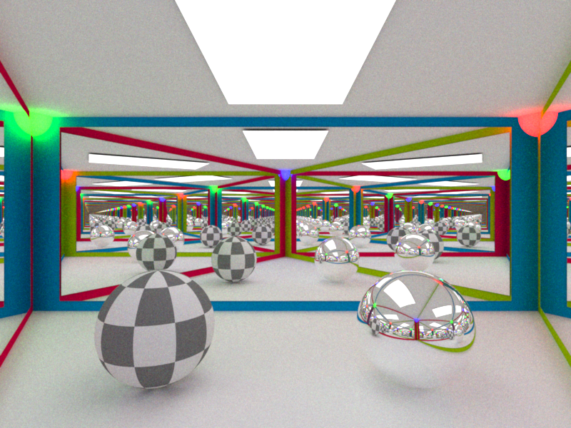
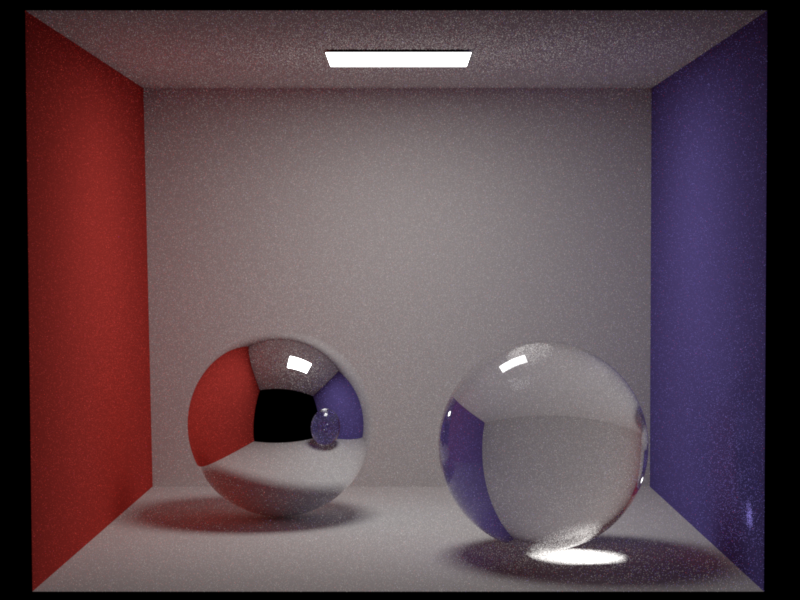
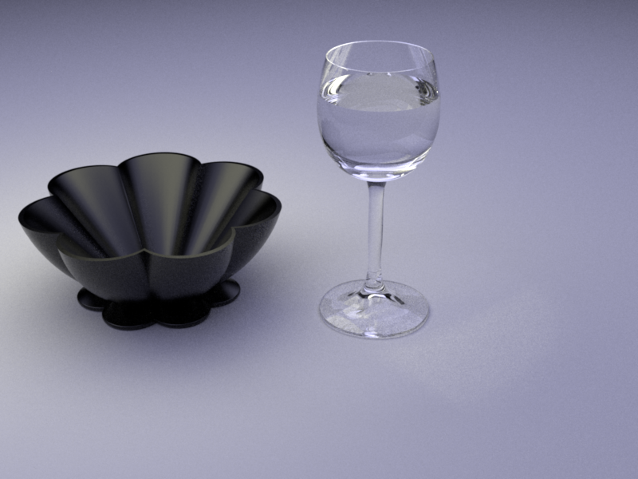
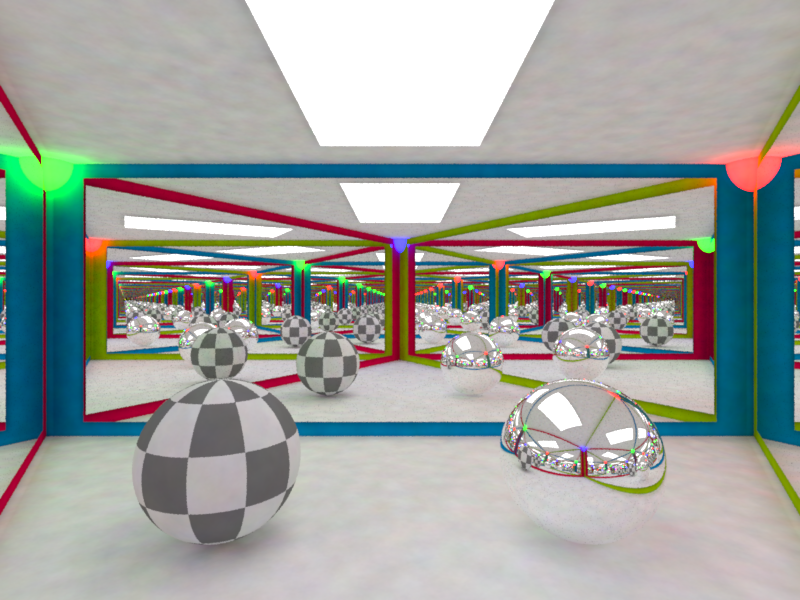
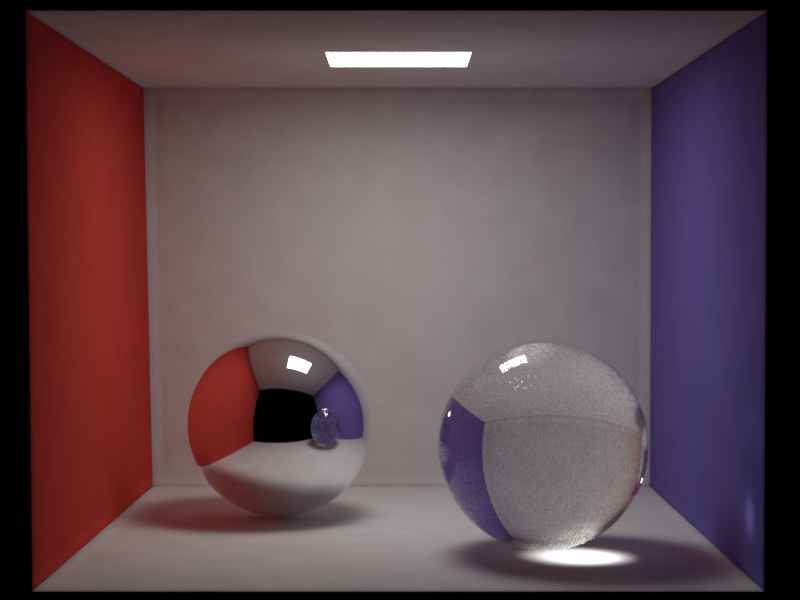
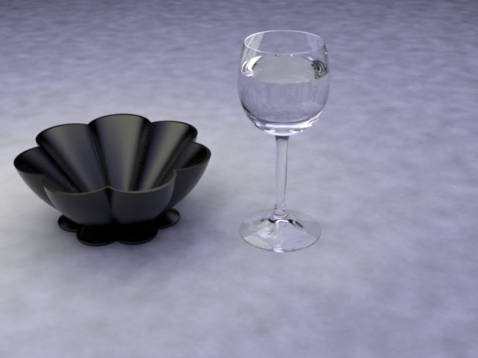
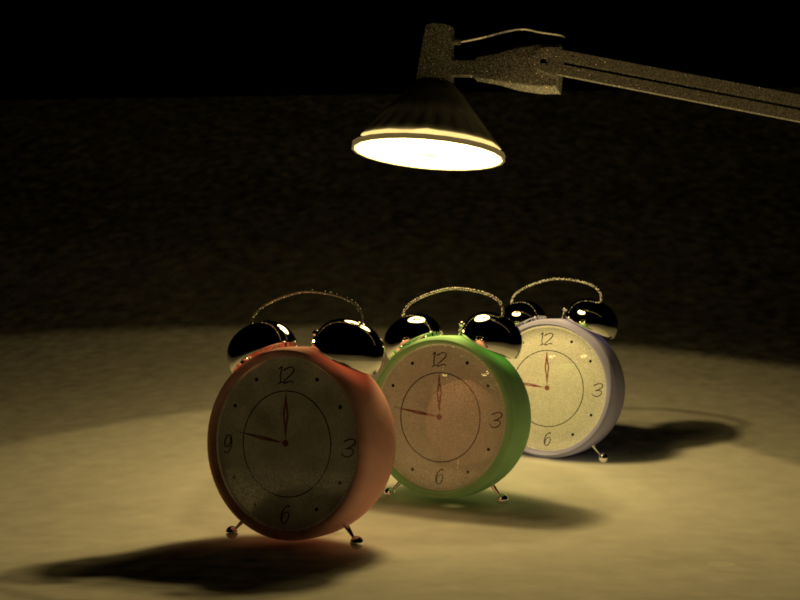

**Homework 4 - Global Illumination**
Student Name: Yingzhe Liu
Legi Number:
(Note: please read the [supplementary](#supplementary) section first before working on this report.)
# Part 1: Dielectric BSDF
**Time spent on this task: 2 hours**
**Describe your implementation of `Dielectric` class.**
First, I compare a random number to the fresnel term to decide whether to sample the reflected light or the refracted light. Then, if it's the reflected light, the returned power is 1,
and the sampled direction is the reflected direction by the normal. If it's the refracted light, I first check if the light comes from inside to outside. If that's the case, I swap e1 with
e2 and turn the normal to the back. After this, I calculate the refrected direction by Snells Law, and the returned power is $\frac{{\eta_1}^2}{{\eta_2}^2}$. All test passes.
...
# Part 2: Path Tracing
## BSDF Sampling
**Time spent on this task: 1.5 hours**
**Describe your implementation of `path_mats`.**
I follow the algorithm described on PA4 tutorial slides. For each iteration, I update t with the success probability from Russian Roulette and the sampled BSDF (including pdf and the
cosine term). Also, I add to Li the emitter radiance * t for each iteration if there is an emitter hit. I use Russian Roulette to prevent endless recursion.
...
## Multiple Importance Sampling
**Time spent on this task: 1.5 hours**
**Describe your implementation of `path_mis`.**
For this integrator, I also follow the algorithm described on PA4 tutorial slides. First, I do light sampling and bsdf sampling like in the direct integrator. With all data calculated,
I put them into the global illumination algorithm. I use Russian Roulette to prevent endless recursion. I noticed that for the table scene, the black container is a little
bit more noisy in my implementation campared to the reference. I think maybe Russian Roulette causes my light bounces to end earlier compared to the reference where RR only kicks in after
3 bounces. Also, I am using the norm of t to determine the success probability of RR. If a different method is what the reference uses, it may also cause the noise difference.
...
## Validation
**Comparison: CGL Triangle**

**Comparison: Cornell Box**

**Comparison: Table**

# Part 3: Photon Mapping
**Time spent on this task: 4 hours**
## Photon Emission from Shape Area Lights
**Describe your implementation of `AreaEmitter::samplePhoton(...)`.**
To sample a photon, I follow the implementation from the nori website. So, first, I choose a random
point on the surface. Then, I sample a random direction over a hemisphere around the normal at the
random point. Finally, the final result is $\pi$ * A * radiance, where A is just 1 / pdfSurface.
...
## Photon Tracing and Storage
**Describe your implementation of `PhotonMapper::preprocess(...)`.**
To sample enough photons and put them into the photon map, I do it like in path_mats. Instead of
calculating radiance, I now calculate photon power. Whenever the sampled photon hits a diffuse
surface, I push it into the photon map. I use the Russian Roulette method to prevent endless
recursion and update W with the success probability for each iteration. I also keep track of the
total number of photons emitted in this process for later use. Also, I multiply W by the total
number of lights in the scene to account for the fact that we are sampling a photon from a single
random light each time.
...
## Rendering/Radiance Estimation
**Describe your implementation of `PhotonMapper::Li(...)`.**
I do this also like in path_mats. The most significant difference is that whenever the surface of
the light bounce is diffuse, I gather all photons within a certain radius. Then, I find the photon
density by following the method on the nori website. After I get the photon density, I update
the total radiance with the photon density multiplied by t.
...
## Validation
**Comparison: CGL Triangle**

**Comparison: Cornell Box**

**Comparison: Table**

**Comparison: Clock**

# Feedback
**Use this section to provide feedback about this assignment (each task, the handout, Nori, etc.). We appreciate your opinions to help improve future homeworks and projects.**
This assignment is well designed.
...
# Supplementary
* For each task, please note down the time you spent working through it and use at least a few sentences to describe your implementation. If applicable, also report the problems you encounter (e.g. whether or how it's solved, what is the difficult part).
* Please let us know to what extent your code is working (e.g. you only managed to work through part of this assignment, or your solution doesn't operate as expected in some corner cases). We encourage you to share your thinking process, and points will be granted based on your description even if the code is not 100% functioning.
* Nori generates both EXR and PNG format output. Please use PNG for image comparison in the report.
* This report template uses [Markdeep](https://casual-effects.com/markdeep/), which supports Markdown syntax in HTML file. For example usage, please refer to the [official demo document](https://casual-effects.com/markdeep/features.md.html).
* LaTeX is also supported for typing mathematical formulas:
$$
L_o(\mathbf{x}, \omega_o) = \int_{\Omega} L_i(\mathbf{x},\omega_i)\, f(\mathbf{x}, \omega_i, \omega_o)\, |\cos\theta_i|\, \mathrm{d}\omega_i
$$